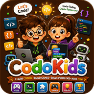

Coding for Kids: What Age Should They Start, and How?
Children can start learning to code at four or five, often without any screen at all. At that age, coding is not about typing commands. It is about giving clear step-by-step instructions, spotting patterns and fixing mistakes. This guide explains what children can learn at each age, gives you unplugged activities to start tonight, and shows how to move gently to real programming.
- What "coding" means for a young child
- What to learn at each age
- Four unplugged activities to start with
- Moving to the screen: free tools by age
- How to help if you can't code
- Mistakes to avoid
1. What "coding" means for a young child
Professional programmers spend more time thinking than typing. The thinking skills behind coding, often called computational thinking, are exactly what young children can practise:
- Sequencing: putting instructions in the right order (put on socks, then shoes).
- Loops: noticing repetition and saying it once ("jump three times" instead of "jump, jump, jump").
- Conditions: if this happens, do that ("if it rains, take an umbrella").
- Decomposition: breaking a big task into small steps.
- Debugging: finding and fixing what went wrong, calmly.
These skills support mathematics, reading comprehension and problem solving in general, whether or not your child ever becomes a programmer.
2. What to learn at each age
| Age | Stage | What it looks like |
|---|---|---|
| 4–6 | Unplugged | Direction games, patterns with beads or blocks, "robot" games with a parent, simple arrow mazes on paper |
| 5–7 | Picture-based coding | Apps where children drag arrows or picture blocks to move a character; no reading needed |
| 7–10 | Block-based coding | Snapping blocks together to make animations, stories and simple games (for example with Scratch) |
| 10–12 | Advanced blocks and first text code | Bigger projects with variables; motivated children can try a beginner-friendly text language such as Python |
These are typical ranges, not rules. A 9-year-old who has never coded should still start with picture or block coding: the ideas matter more than the format.
3. Four unplugged activities to start with
Program the parent robot (ages 4–8)
You become a robot that follows instructions exactly. Your child must guide you to make a jam sandwich or to walk to the door. If they say "put jam on the bread" without saying "open the jar", the robot stops. Children laugh, and they discover why programs need precise, ordered steps. It is also the gentlest introduction to debugging.
Floor arrow maze (ages 4–7)
Make a 4×4 grid with tape on the floor. Place a toy as the "treasure". Your child writes or draws arrow cards (↑ ↓ ← →) to guide a teddy from the start to the treasure, then tests the program by moving the teddy card by card. Add "walls" to make it harder.
Bead and LEGO loops (ages 5–8)
Build a pattern such as red, blue, blue, red, blue, blue. Ask: "Can you describe it in one short sentence?" ("Repeat red, blue, blue three times"). Your child has just written a loop. Swap roles: they say a loop and you build it.
Simon says with conditions (ages 6–10)
Play Simon says with rules like "If I touch my head, you clap. If I touch my nose, you jump. Otherwise, do nothing." Then let your child invent the conditions. This is exactly how "if… else" works in every programming language.
4. Moving to the screen: free tools by age
- Ages 5–7: picture-based apps where children drag arrows to move a character. ScratchJr is a well-known free option, and our own CodoKids app offers robot mazes for this age.
- Ages 8–12: Scratch, a free platform created by the MIT Media Lab, lets children build animations, stories and games with colourful blocks.
- Ages 10–12 and up: children who enjoy Scratch can try beginner text programming, for example drawing shapes with Python's turtle module, often with an adult nearby.
Twenty to thirty minutes, two or three times a week, is plenty. Coding should be a creative activity, not another source of endless screen time.
5. How to help if you can't code
You do not need to know how to program to support a young coder. The most useful things you can do are:
- Ask your child to explain their program. Explaining step by step often reveals the bug on its own.
- Be the user. Play their game and give honest, kind feedback: "I didn't understand what to do at the start."
- Encourage changes, not just copying. After following a tutorial, ask "What could you change to make it yours?"
- Celebrate persistence. Praise the moment they fixed a bug, not only the finished project.
6. Mistakes to avoid
- Starting with typed code too early. Spelling and punctuation errors frustrate young children before they understand the ideas. Blocks first.
- Only following tutorials. Copying builds little understanding unless the child then changes and extends the project.
- Turning it into long screen sessions. Mix screen coding with unplugged games, drawing plans on paper and testing programs together.
- Pushing a child who isn't interested. Try again in six months, or connect coding to something they already love: stories, music, animals or football.
Free resources on Kids Learning Hub
Our Patterns game trains the pattern-spotting behind loops, and our printable mazes are perfect for drawing arrow "programs" on paper before trying them on screen.

Guide a friendly robot through 40 mazes with arrows, loops and conditions — coding for ages 4 to 13, offline and free.
The best time to start coding is when your child is curious, and the best way is to start without a screen. A sandwich-making robot tonight could be the first step towards building their own games.
Frequently asked questions
What age should kids start coding?
Children can start around age 4 or 5 with unplugged activities such as direction games and patterns, move to picture-based coding at 5 to 7, block-based coding such as Scratch at 7 to 10, and try simple text coding from about 10 if they are interested.
Can kids learn coding without a computer?
Yes. Unplugged activities such as guiding a "parent robot", arrow mazes on the floor and patterns with beads teach sequencing, loops, conditions and debugging, the core ideas of programming.
Which programming language is best for children?
For most children under 10, block-based tools are best because they remove typing errors. Scratch is a popular free choice. From about age 10, motivated children can try Python, which has a simple, readable syntax.